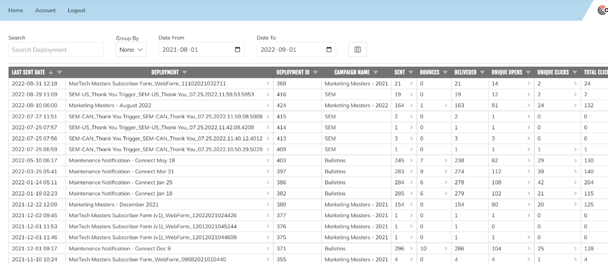
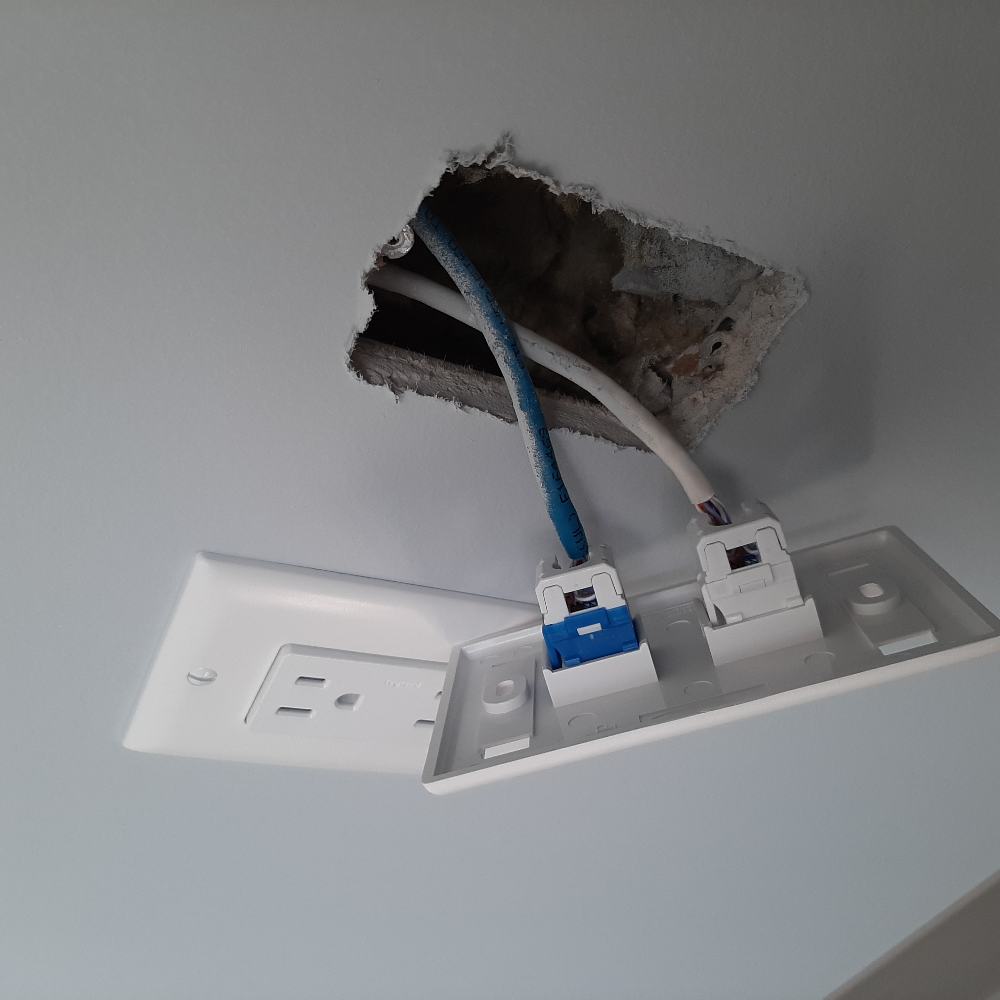
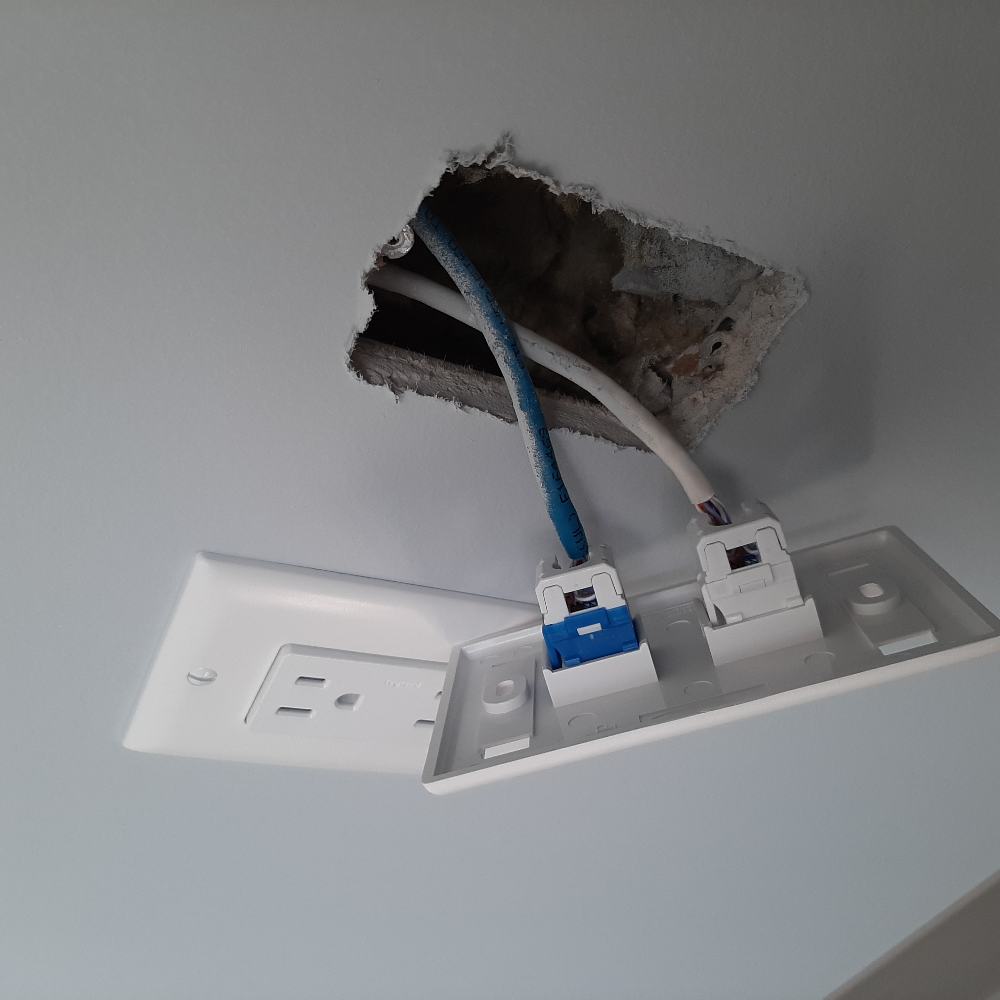

Subscribe Page Phase (Janruary - April)
Project Overview
This was the first project I was given at Tekside. The state of the system when I arrived
was fairly simple, the purpose was to subscribe users to our clients different newsletters.
This was accomplished through a few different steps.
- Create a webpage for the user to browse to.
- Get the user to enter the email they'd like to subscribe with.
- Use an API that was built by the previous Coop student to send a request to the companies main
SAAS, which would then subscribe them to their desired newsletter.
The task I was given was to revamp the old system to provide more security to both the end user
and our clients which are using the service. The improvements I was asked to implement are as follows.
- Verify a users email before subscribing them to the newsletter.
- Once verified allow a user to change their preferences.
Steps in development
Verifying a users identity
- An initial verification page was created with a single field for the user to enter their email.
- Once a user submitted their email a token was created with their email as the key which is valid for 1 day
- An email would be sent to the user with a link containing their valid token.
Editing a users preferences
- When a user clicked on the link in their email they're brought to the preference editor page.
- They would be able to edit their personal details as well as what newsletters they wanted to subscribe to.
Once any changes were made a request would be sent to Connect with the updated contact/subscription
information and the users info would be updated in Connect.
Problems and Solutions during development
Problem: Almost no documentation of the initial API was provided which made starting development very taxing.
Solution: Unfortunately there was no easy solution for myself. Before adding my own changes I had to read
through the current codebase for at least a week to understand how it interacted with Connect's API as I didn't want to
break any existing functionality. Even though there was no easy solution for me, I did document all the new code I wrote as well
as the previous code that I hadn't written. This was any one else who had to work on the project in the futrue would have an
easier time getting started and making changes of their own.
Problem: It took about 1 - 2 days to get a new subscription page up and running. I had to do this for about 10
clients which ended up taking quite a bit of time in total, even with the API working perfectly.
Solution: I created a Subcription template repository. Using this template anyone would be able to setup a new client
in few hours once they got used to it. I created a step by step tutorial on how to setup a new client, with screenshots and simple instructions
making the setup far easier than before. I had demoed this project to the whole company on something called "Tekside Tuesday" which is
an event held each month to show off what some of the developers are working on. This was met with great enthusiasm, and suggestions from
my co-workers on what they liked and where I could improve this service. The above screenshots where taken from the page I setup for this demonstration.
Email Template Phase (May)
Project Overview
This project consisted of getting designs for emails that clients wanted to sendout and creating HTMl templates for each email.
The timeline isn't entirely accurate as I worked on email templates throughout my entire placement but I did most of that work during late April and May.
Normally creating HTML templates is very easy as there isn't that much that can go into them but when creating templates for email there are alot of factors
that need to be considered. There are 3 variables when it comes to formatting the email, the device; operating system; and application the user is opening it on.
Seeing as how none of these can be known before hand the email must be formatted so it looks the same across all devices, OS's and applications.
Steps in development
Formatting across all platforms
To assure that the email created looks identical or as close to it, on all platforms we utlize a site called emailonacid. This site
takes whatever HTML it's given and renders it across a large varity of devices, OS's, and application so that you can
verify that the end user will view them email as the design intended. Below is an example of an email and what EmailOnAcid will generate.
Problems and Solutions during development
Problem: Most email applications render the email as expected, the main culprit behind most issues is Outlook. It will either ignore certain
styles that have been applied or change them entirely.
Solution: There is no perfect solution for this issue besides using HTML standards from when the Outlook application was made. This means
you're not able to utilize alot of modern day standards for HTML and must use old code repeatedly. My solution to this was to create an
email template library. I hosted an internal site where employee's can upload HTML templates of previous emails so that they can be accessed and reused
easily. I also added a snippets sections that just had small chunks of code that were reused often between different templates.
Screenshots
Data Ingestion Project (June)
Project Overview
For privacy the client for this project will just be refferred to as the client instead of their name. For this project I was a member
of a 4 person team that was tasked with importing all of the clients contacts from their current CRM into Connect. There was 3 steps
to this process, the API request serice; Data-filter service; and the Connect-contact-service. My development was focused on the Connect-Contact-Service
and the Data-Filter-Service
Steps in development
API-Request-Service
This service makes requests to the clients current CRM's API to retrieve the contact records. It sends a formatted query to the clients's API
which omits contacts based on certain data fields. It then parses the returned data into an object, that object is then passed on to the
Data-Filter-Service. This was done once during the bulk import and was then setup to routinely request the recently changed contact records at
a set interval.
Data-Filter-Service
This service has 2 main functions. After receiving the data from the API-Request-Service it will check for bad records (invalid emails, null data etc)
and discard them. If a record is valid then it is compared with a secondary database that stores a hashed version of the records info. If the record
is found and is different then what's currently in the database or if the record is not found in the database (ie. it's a new record) then the hash value
in the database is created/updated. The record is then passed onto the connect-contact-service.
Connect-Contact-Service
This service receives the filtered data from the Data-Filter-Service, formats it appropriately, then sends it to Connect.
Problems and Solutions during development
Problem: Receiving bad data.
Solution: Alot of the data we received either had null information that shouldn't be sent to Connect or had missing data.
We had initially figured that we could just request the data from the clients CRM and pass it onto Connect but after further investigation
we found this would cause alot of issues. This is why the data-filter-service was added as part of the development process. This is also
when I learned that seperation of different services can be very useful when developing in a groups. The data object that we passed through
the different services was constant so all we had to worry about in our seperate services was how to process the data. This made the communication
through the seperate services simple, streamling the development process.
Connect Analyze refresh (July - August)
Project Overview
I was put on this project with a co-worker, we were asked to modernize the Analyze service that Connect offers, it’s used to look at all the data that
each email deployment has recorded. We also added in a dashboard page which did not exist in the service prior. We refreshed the table page with better
coding practices improving the longevity of the service. The new features added on the dashboard included graphs to view specific data points over time
as well as quick stats comparing certain relevant info to the previous duration of time selected.
Problems and Solutions during development
Problem: Refactoring a large code base with a new language.
Solution: To improve the quality of the codebase we decided that it would be best to change the language used from Javascript to TypeScript.
This change would improve the integreity of the codebase over a longer period of time and make it easier to read when a new employee gets moved onto the project
in the future. Although we knew this would be a good idea in the long term, it was quite difficult to manage in the short term, as we had to rewrite a large majority
of the existing service. Despite the issus we faced it ended up being a great learning experience, I had to differentiate what we would be better off to rewrite
completely as it would take to long to translate as well as what would be fine to leave alone. We ended re-writing a large chunk of the code base but ended up
making it more compact, making a component library for many of the UI features in the process. By doing this we produced a standarized model that could be used
for the future of the project making it far easier for other people to contribute to the service!
Screenshots




 
